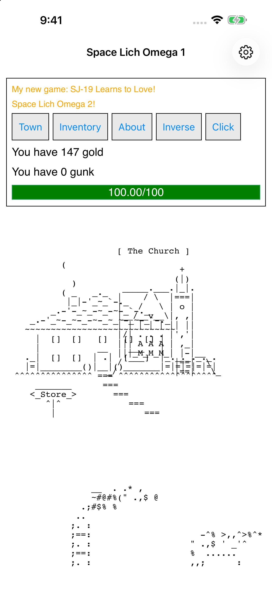
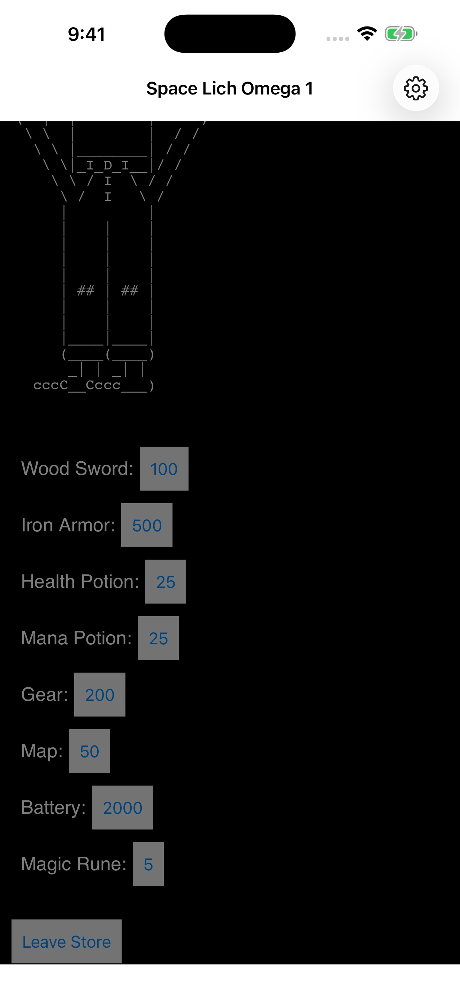

004 · iPhone · In preparation
Space Lich Omega 1
Explore. Equip. Face the lich.
Set out into an ASCII-art adventure. Gather resources, upgrade equipment, take on quests, and uncover the first Space Lich Omega game on iPhone.
Explore the gamePublic release in preparation.
Space Lich Omega 1
Step into
the unknown.
Explore an unfolding world of quests, equipment, magic, and encounters. Earn resources, prepare for each challenge, and discover what waits beyond the next location.
This host runs the original first Space Lich Omega game. The original ASCII artwork, combat, story, and progression remain in place, with a layout and controls adapted for touch.
Swipe to explore screenshots →


The original town and church in the light display option.


Compare equipment, supplies, and upgrades in the store.
Real screenshots from the iPhone app.
Made for a little focus.
Your game.
Your device.
Play offline, keep progress locally, and export a backup when you want a separate copy.
Can I play offline?
Yes. The original game and its required resources are bundled with the app. Links you choose open in your browser and require internet access.
How are saves handled?
The original game saves outside a quest while shield and berserk are inactive. A backup made during a quest contains the last eligible checkpoint. Return to a safe checkpoint before exporting.
Open Settings → Export backup to create a native JSON backup. Use Import backup to restore one. Import asks before replacing progress. Keep exported backups separately from the app.
Does it run while I’m away?
iOS may suspend the game in the background. The app does not add closed-app catch-up production.
When can I download it?
The iOS app is in preparation. A verified App Store link will appear here when it is publicly available. There is no public beta sign-up on this page.
Player information
A little help,
when you need it.
Find save instructions, contact support, and read the app’s privacy policy.
Original Space Lich Omega by Nora Forcier / Zertuk. Original About and ASCII Art Credit panels are retained in the app. Visit the original game or source.
This independent local host is in preparation. It is not an official release. Public distribution authorization for the game and credited artwork is still being resolved.